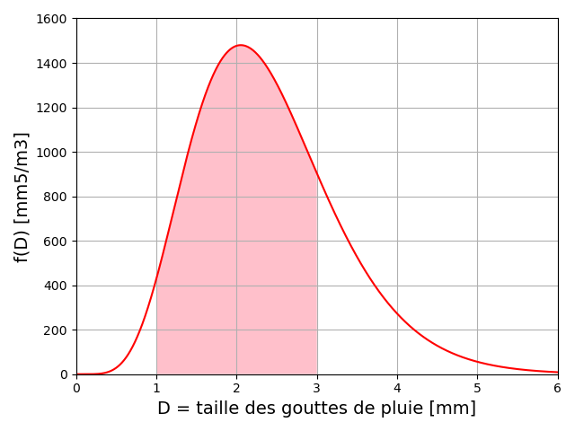

Chapitre IV : Intégration numérique
Ce chapitre porte sur les méthodes numériques pour l'approximation de l'intégrale d'une fonction.
Position du problème
Motivation
Le but de l'intégration numérique est d'évaluer la valeur de l'intégrale \(I\) d'une fonction \(f\) continue sur un intervalle \([a,b]\) avec \(a<b\) réels :
\(I = \int_{a}^{b} f(x) dx\)
On rappelle que cette intégrale représente l'aire comprise entre la courbe de la fonction, l'axe des abscisses, et les droites \(x=a\) et \(x=b\).
\(I\) est une intégrale définie dont le résultat est un scalaire. La fonction \(f\) peut être connue qu'en certains points, mais ne dispose pas de singularité sur \([a,b]\), qui est supposé fini et fermé.
Dans certains cas limités, l'intégrale peut être calculée analytiquement, à partir de la primitive de \(f\), notée \(F\) :
\(I = \int_{a}^{b} f(x) dx = F(b)-F(a)\)
Cependant, ce calcul peut être long et compliqué, et beaucoup de fonctions ne disposent pas d'expression analytique pour leurs primitives. On préfèrera faire appel à des méthodes numérique pour calculer une valeur approchée de \(I\).
L'approximation de \(I\) s'effectue le plus souvent à l'aide de combinaisons linéaires des valeurs de \(f\) : des formules de quadrature de type interpolation.
L'intégrale \(I\) est remplacée par une somme finie : \(I \approx \sum_{i=0}^{n} w_i f(x_i)\).
Exemple de problème
Au cours de ce chapitre, nous appliquerons les différentes méthodes d'intégration à un même exemple : La modélisation de la réfléctivité radar des gouttes de pluies.
En 1948, Marshall et Palmer ont proposé un modèle du facteur de réflectivité des gouttes de pluies \(Z\) (en \(mm^6 m^{-3}\)) pour les radars météorologiques :
\(Z = \int_{0}^{D_{max}} N_0 e^{- \Lambda D} D^6 dD\)
Les paramètres de ce modèle sont :
-
\(D_{max}\) la plus grande taille de goutte, que nous fixerons à \(6 mm\).
-
\(\Lambda\) une constante empirique en \(mm^{-1}\), pour lequel Marshall et Palmer proposent \(4.1 R^{-0.21}\), avec \(R\) le taux de pluie que nous fixerons à \(5 mm.h^{-1}\).
-
\(N_0\) une constante empirique en \(m^{-3} mm^{-1}\) nommée "paramètre de forme", pour lequel Marshall et Palmer proposent \(N_0 = 8000\).
Ce modèle est encore aujourd'hui utilisé pour l'interprétation des mesures des radars météorologiques, dans le but d'estimer les précipitations aux sol à partir des réflectivités mesurées.
Nous essayerons donc de calculer l'intégrale entre \(x=0\) et \(x=6\) de la fonction \(f(x) = N_0 e^{- \Lambda x} x^6\), dont la valeur est d'environ \(3146.31 mm^6/m^3\).

Sous Python on utilisera la bibliothèque Numpy :
import numpy as np
Puis, on définira les variables globales suivantes :
N0 = 8000 #Paramètre de forme (m3/mm)
R = 5 #Taux de pluie (mm/h)
La fonction \(f\) sera définie comme :
def f(D):
return N0*np.exp(-(4.1*R**-0.21)*D)*D**6
Formules de quadrature
Principe
| Idée |
|---|
| Approcher la fonction \(f\) par un polynôme \(p\). |
| Si cette approximation est suffisamment bonne : |
| \(I = \int_{a}^{b} f(x) dx \approx \int_{a}^{b} p(x) dx\) |
Cette approche a 2 avantages :
-
Les polynômes sont faciles à intégrer.
-
Cette méthode est utilisable même si on ne connait \(f\) qu'en un nombre fini de points \((x_i,f(x_i))\).
Les méthodes de Newton-Cotes et de Gauss s'appuient sur cette idée en utilisant des formules de quadrature de type interpolation, qui s'expriment comme une combinaison linéaire de valeurs de la fonction en des points à définir.
On cherche donc une valeur approchée de \(I\) au moyen d'une somme finie :
\(I = \int_{a}^{b} f(x) dx \approx I_n = \sum_{a}^{b} w_i f(x_i)\)
On dit que \(I_n\) est une formule de quadrature de type interpolation à \(n+1\) points
Les valeurs \(x_i\) sont les "pivots" ou "points / noeuds de quadrature".
Les coefficients \(w_i\) sont les "poids" de la formule de quadrature.
Formules de type interpolation
Soient \((x_i,f(x_i))\) avec \(i=0,1,...,n+1\) points d'interpolation. Un choix naturel consiste à approximer la fonction \(f\) par le polynôme de Lagrange de degré \(\leq n\) qui passe par ces \(n+1\) points :
\(f(x) \approx p(x) = \sum_{i=0}^{n} f(x_i) L_i(x)\)
Il en résulte la formule de quadrature de type interpolation à \(n+1\) points :
\(I = \int_{a}^{b} f(x) dx \approx I_n = \int_{a}^{b} p(x) dx = \int_{a}^{b} \sum_{i=0}^{n} f(x_i) L_i(x) dx\)
Par linéarité de l'intégrale, on obtient les coefficients de la formule de quadrature :
\(I_n = \sum_{i=0}^{n} f(x_i) \int_{a}^{b} L_i(x) dx\)
D'où : \(w_i = \int_{a}^{b} L_i(x) dx\)
Les poids \(w_i\) s'obtiennent par intégration des polynômes de Lagrange. Ils sont donc indépendants de \(f\) et ne dépendent que des points \(x_i\).
Degré de précision
On définit l'erreur de troncation pour l'intégration comme :
\(E(f) = I-I_n\)
Une formule de quadrature est dite exacte pour \(f\) si \(E(f)=0\).
| Degré de précision |
|---|
| Le degré de précision d'une formule de quadrature est l'entier positif \(n\) tel que \(E(p_i)=0\) pour tout polynôme de degré \(i \leq n\) et \(E(p_{n+1}) \neq 0\) pour un polynôme \(p_{n+1}\) de degré \(n+1\). |
Donc une formule de quadrature exacte sur l'ensemble des polynômes de degré \(\leq n\) est au moins de degré de précision \(n\).
Autrement dit, une formule de quadrature de degré de précision \(n\) vérifie :
-
\(I = \int_{a}^{b} p_k(x) dx = \int_{a}^{b} x^k dx = I_n = \sum_{i=0}^{n} w_i x_i^k\) pour tout \(0 < k \leq n\)
-
\(I = \int_{a}^{b} p_{n+1}(x) dx = \int_{a}^{b} x^{n+1} dx \neq I_n = \sum_{i=0}^{n} w_i x_i^{n+1}\)
| Théorème |
|---|
| Une formule de quadrature à \(n+1\) points est exacte sur l'ensemble des polynômes de degré \(\leq n\) |
| si est seulement si c'est une formule de quadrature de type interpolation à \(n+1\) points. |
Donc une formule de quadrature de type interpolation à \(n+1\) points est au moins de degré de précision \(n\).
Méthodes de Newton-cotes simples
Les méthodes de Newton-Cotes s'appuient sur la formule de quadrature de type interpolation de Lagrange :
\(I = \int_{a}^{b} f(x) dx = I_n + E(f) = \sum_{i=0}^{n} f(x_i) \int_{a}^{b} L_i(x) dx + E(f)\)
où \(E(f)\) est l'erreur de troncature.
Les pivots de quadrature sont régulièrement espacés :
\(x_i = x_0 + ih\) avec \(i=0,1,...,n\) et \(h = \frac{b-a}{n}\)
Les pivots sont donc fixes (équidistants) alors que les poids sont ajustés.
La régularité de la subdivision permet d'obtenir des formules qui sont très générales.
Il y a \(n+1\) pivots donc cette méthode est exacte pour les polynômes de degré \(\leq n\) au moins.